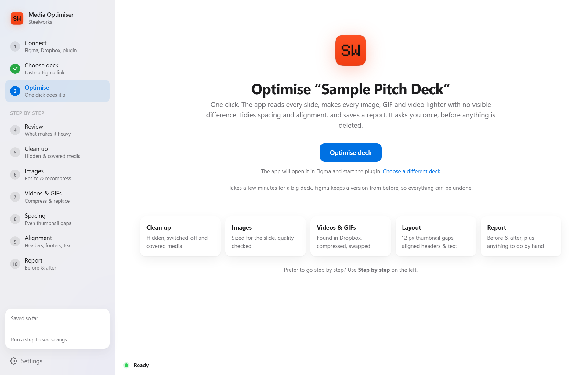
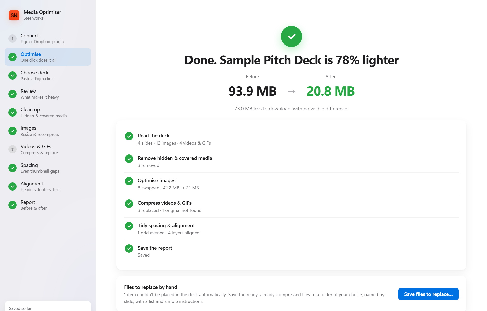

Makes heavy Figma Slides decks fast: images, GIFs and videos become much lighter with no visible difference, hidden media is cleaned up, thumbnail gaps and headers/footers line up, and the cover and footer dates can be updated across the whole deck. Thank you for testing it.
Please test on a copy of a deck (in Figma: right-click the file › Duplicate). Figma keeps a version from before any change, so it can always be undone, but a copy keeps it stress-free.
What's in this folder
| Mac | Steelworks-Media-Optimiser-__VERSION__-macOS-….dmg: the app for Mac. Video tools and the Figma plugin are included. |
| Windows | Steelworks-Media-Optimiser-__VERSION__-Windows-Setup.exe: the installer for Windows 10/11. |
| Figma plugin | Only needed if you use Figma in a web browser instead of the Figma desktop app (see the end of this guide). |
Before you start
- Install the Figma desktop app (figma.com/downloads), sign in, and open it once.
- Have Dropbox for desktop signed in with your Steelworks account, so the app can find the original videos.
Install on a Mac
- Double-click the
.dmg and drag Steelworks Media Optimiser into Applications.
- Open it from Applications. Because this test build isn't from the App Store yet, macOS will say it can't check it for malicious software. That's expected:
- Click Done (or OK), then open System Settings › Privacy & Security.
- Scroll down to “Steelworks Media Optimiser” was blocked… and click Open Anyway, then Open Anyway again and enter your Mac password.
- On older macOS versions you can instead right-click the app › Open › Open.
- Macs with Apple chips (M1–M4): if macOS offers to install Rosetta, click Install. It's a one-time, free Apple component.
- The first time the app starts the plugin in Figma, macOS asks to let it control your computer. Open System Settings › Privacy & Security › Accessibility and switch on Steelworks Media Optimiser. (If you'd rather not, the app tells you which Figma menu to click instead.)
Install on Windows
- Double-click
…-Windows-Setup.exe. If Windows shows “Windows protected your PC”, click More info › Run anyway (the test build isn't signed yet).
- It installs for your user only. No administrator password is needed, and it opens when done.
Using it: three steps
1 · Connect (first time only)
Click Add to Figma if you see it (Figma restarts for a moment; your files are saved automatically). Video tools and your Dropbox folder are found by themselves.
2 · Choose a deck
Paste the deck's link (in Figma: Share › Copy link) and click Open. You don't need to open the deck yourself. Deck details lets you change the client name in the header, the cover lines and the dates on every slide at once.
3 · Optimise
Click Optimise deck. The app opens the deck in Figma, starts the plugin, and does the rest. The first time, click Allow when it asks. It stops once to show what it would delete; untick anything you want to keep.


When it's done you'll see before and after sizes. Videos Figma won't let apps place by themselves are listed under Replace in Figma; click it and drag each file onto the canvas when asked. Anything left over can be saved with Save files to replace….
What to tell us
- Did it install and open? Did Add to Figma and Optimise deck work?
- The before/after sizes, and anything that looked different afterwards (images, videos, crops, positions, fonts).
- Any message that was confusing. A screenshot is perfect.
- Your computer: Mac (Intel or Apple chip) or Windows, and roughly how big the deck was.
Good to know
- Undo: image swaps, spacing and alignment can be undone in the app (Report › Undo). Everything else: in Figma, File › Show version history › the version named Before Media Optimiser.
- Quality: every image and video is checked against the original after compressing; if it would look worse, the original stays. Settings › Quality can switch to smaller files.
- Online Dropbox sign-in isn't switched on in this build yet: the app uses the Dropbox folder on your computer, and files that aren't synced are downloaded by Dropbox when needed.
- Figma in a web browser? Use the Figma desktop app for testing. With browser Figma, open the plugin folder from the app (Connect › Show plugin file) and import it via Plugins › Development › Import plugin from manifest.
Steelworks Media Optimiser __VERSION__ · github.com/iamgraphicartist/steelworks-media-optimiser